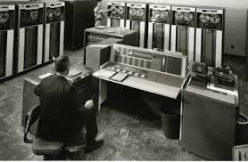
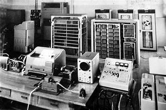

|
Second-Generation Computers
(approximately 1958–1963)
The second generation of computers began
when the transistor—a small device made
of semiconductor material that acts like
a switch to open or close electronic cir
cuits—started to replace the vacuum tube. |
 |
|
Transistors: A transistor is a semiconductor device used to amplify or switch electrical signals and power. It is one of the basic building blocks of modern electronics. It is composed of semiconductor material, usually with at least three terminals for connection to an electronic circuit. A voltage or current applied to one pair of the transistor's terminals controls the current through another pair of terminals. Because the controlled (output) power can be higher than the controlling (input) power, a transistor can amplify a signal. Some transistors are packaged individually, but many more in miniature form are found embedded in integrated circuits. Because transistors are the key active components in practically all modern electronics, many people consider them one of the 20th century's greatest inventions |
 |